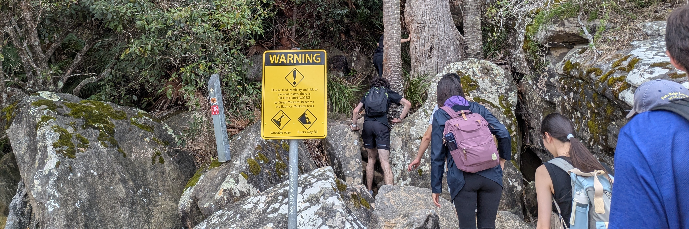
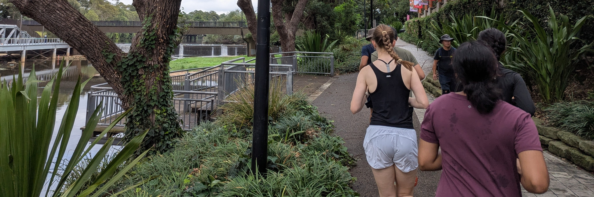
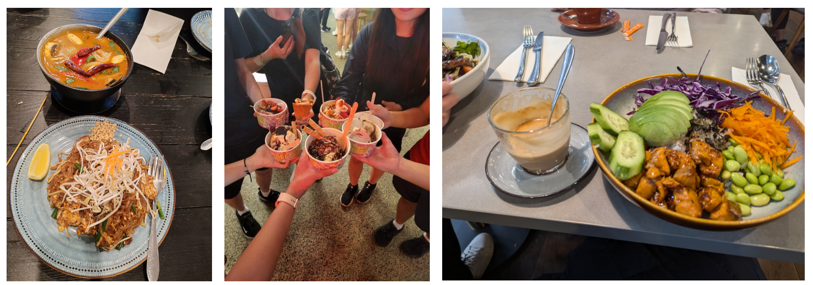

DAY
During the day, I really enjoy spending time outdoors!
I've recently become a much more active participant of Wandersoc, since I've always enjoyed going on hikes or exploring new urban locations!
I've also picked up running over the last few months with Runsoc; even though I'm still a beginner, I hope to eventually run a 10k in less than an hour (and beyond!)
 Finally, I also like trying new food places! I'm not a picky eater; in fact, I'm not even sure I have a favourite food because I like (almost) everything!
